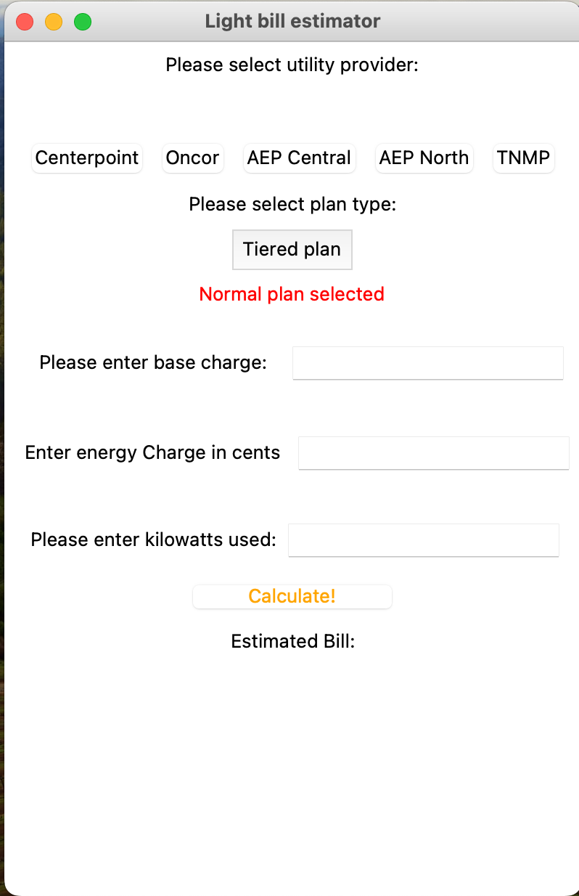

In this project, I transformed raw layoff data from the COVID-19 pandemic using MySQL to enhance its usability
for in-depth analysis. By applying data cleaning and preprocessing techniques, I structured the data to uncover
meaningful insights and support further analytical exploration
In this project, I utilized MySQL Server to conduct an in-depth analysis of global layoff data during the COVID-19 pandemic.

This project features a user-friendly GUI in Python for calculating light bills. Users can input electricity usage
and information from their electricity fact label, and the program generates an estimated bill based on the provided data."

In this project, I developed a simple yet engaging side-scrolling video game using Python and Pygame.
Players control a constantly running character, with the main objective being to jump and avoid
enemies for as long as possible. This project showcases my Python programming skills and my ability
to create interactive and entertaining applications.

In this project, I analyzed bike sales data using Excel. I performed data cleaning on a working sheet to
preserve the original data, created insightful pivot tables, and developed an interactive dashboard to
visualize key metrics. This project demonstrates my ability to handle data cleaning, transformation, and
visualization in Excel, providing valuable insights for decision-making.
In this project, I analyzed the "Music Listening Histories Dataset"
from Last.fm, which includes more than 27 billion logs of music listening
data from around the world. The analysis focused on several features, such as:
- Exploratoryness: How much a listener explores different music instead of listening to the same music repeatedly.
- Mainstreamness: How similar a listener’s listening history is to what everyone else listened to.
- Genderness: How close a listener’s listening history is to what females or males are listening to. Higher values indicate a male tendency, while lower values indicate a female tendency.
- Fringeness: How unconventional the artists that the users listen to are.
Additionally, a Neural Network was used to predict the gender of a user based on their music
listening history, achieving a 72% accuracy.